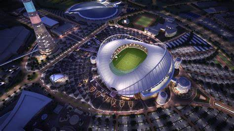
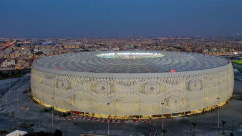
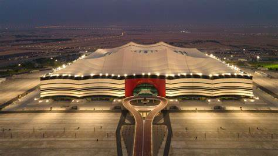
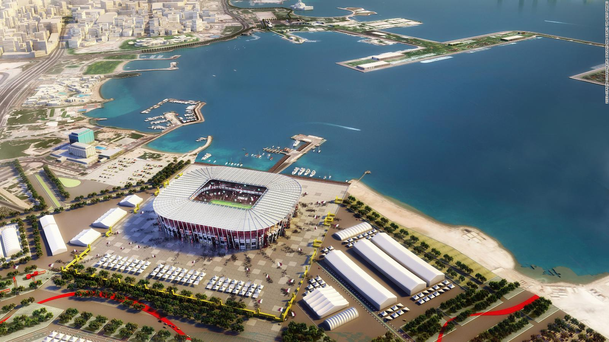

Principal estádio do Mundial, fica em Lusail, uma cidade construída do zero especificamente para a Copa do Mundo, um símbolo do evento no Qatar. Escolhido como palco da grande final, o estádio será transformado em um espaço comunitário, que terá desde escolas até lojas, instalações esportivas e clínicas de saúde. E tudo isso sem desfigurar a fachada da arena.
Estádio intermacional Khalifa

Cidade: Doha
Capacidade: 50.000
O Khalifa, originalmente construído em 1976, foi o primeiro estádio da Copa do Mundo a ficar pronto, quando sua reforça ficou pronto ainda em 2017. Desde então, o estádio mais tradicional do Qatar já teve um gostinho do que é receber uma competição Fifa, sendo palco de jogos do Mundial de Clubes de 2019, quando o Flamengo foi vice-campeão. Considerado como um símbolo da excelência esportiva no Oriente Médio, está localizado no centro de todas as sedes da Copa, sendo peça fundamental da competição, inclusive em termos de locomoção.
Estádio AL-Thumama

Cidade: Doha
Capacidade: 40.000 (Aproximadamente)
Projetada para celebrar a cultura e as tradições árabes, tanto quanto o próprio torneio esta arena tem uma forma ousada e circular, que reflete o gahfiya – uma tradicional touca de crochê usada por homens e meninos em todo o Oriente Médio há séculos. Depois da Copa, a capacidade do estádio será diminuída para 20 mil espectadores, e além de ser usada para eventos esportivos, ainda terá as áreas de lazer e relaxamento que melhoram ainda mais sua utilização, tanto agora quanto no futuro.
Al-Janoub
Cidade: Al-Wakrah
Capacidade: 40.000
O Al-Janoub foi o primeiro dos estádio construídos do zero a ficar pronto para a Copa, sendo entregue em maio de 2019. Ele teve seu design inspirado nos barcos de pesca de pérola, que moveu por muito tempo a economia de Al-Wakrah, cidade onde está situado. A capacidade será reduzida após o Mundial, mas as experiências que cercam a arena vão permanecer. Os torcedores vão poder passear à beira-mar, fazer compras e visitar um museu com a história da região, tudo isso sem sair dos arredores da arena. Além disso, ainda estão sendo desenvolvidos outros extras no estádio, como escola, salão do casamento, pistas de ciclismo, equitação e corrida, além de restaurantes, mercados, ginásios e parques
Estádio AL-Bayt

codade: Al-Khor
Capacidade:60.000
O estádio, que será palco da abertura da Copa do Mundo, teve nome e design inspirados nas bayt al sha'ar, cabanas usadas pelos povos nômades da região do Qatar e outros países do Golfo Pérsico. A ideia é que, além da experiências esportivas, os visitantes também vivenciem a tradicional cultura qatari. Com o intuito de promover a sustentabilidade, o estádio também é um modelo de desenvolvimento verde, ao mesmo tempo em que é funcional e grandioso. Um dos projetos é quanto às arquibancadas removíveis, que serão entregues a país em desenvolvimento que precisem de uma infraestrutura esportiva.
Estádio Armed Bin Ali
Cidade: AL-Rayyan
Capacidade: 40.740
O Ahmed Bin Ali foi construído em uma cidade com forte cultura futebolística, mas também à beira do deserto qatari. Com um design que reflete elementos do país, como as dunas, também se preocupa em não afetar a natureza ao seu redor, tendo usado materiais e práticas de construção sustentáveis. Após a Copa, a capacidade do estádio deve ser reduzida pela metade, e os assentos extras serão doados.
Estádio Ras Abu Aboud

Cidade: Doha
Capacidade: 40.000
Construído com contêineres de embarcações e assentos removíveis, o estádio é quase como um "Lego" e será totalmente remodelado após a Copa do Mundo, com suas partes enviadas para projetos sustentáveis no país. Apelidado de 974, em alusão ao código de discagem internacional do Qatar, bem como o número exato de contêineres usados para a construção, o estádio teve como mote de seu projeto minimizar os custos ao mesmo tempo em que garantisse vida longa aos seus materiais.
Estádio da Cidade da Educação
Cidade: Al-Rayyan
Capacidade: 45.350
O entorno, repleto por universidades e pelos principais centros de pesquisa do país, deu o nome ao terceiro estádio finalizado para a Copa do Mundo, Este que será mais um a ter sua capacidade reduzida na metade e assentos retirados doados. Além dos centros de estudos, o estádio também é cercado por lojas e campos de treinamento - tanto de futebol quanto de vôlei. E, ao final do Mundial, é esperado que as instalações apoiem os alunos, professores e funcionários envolvidos nas universidades locais.